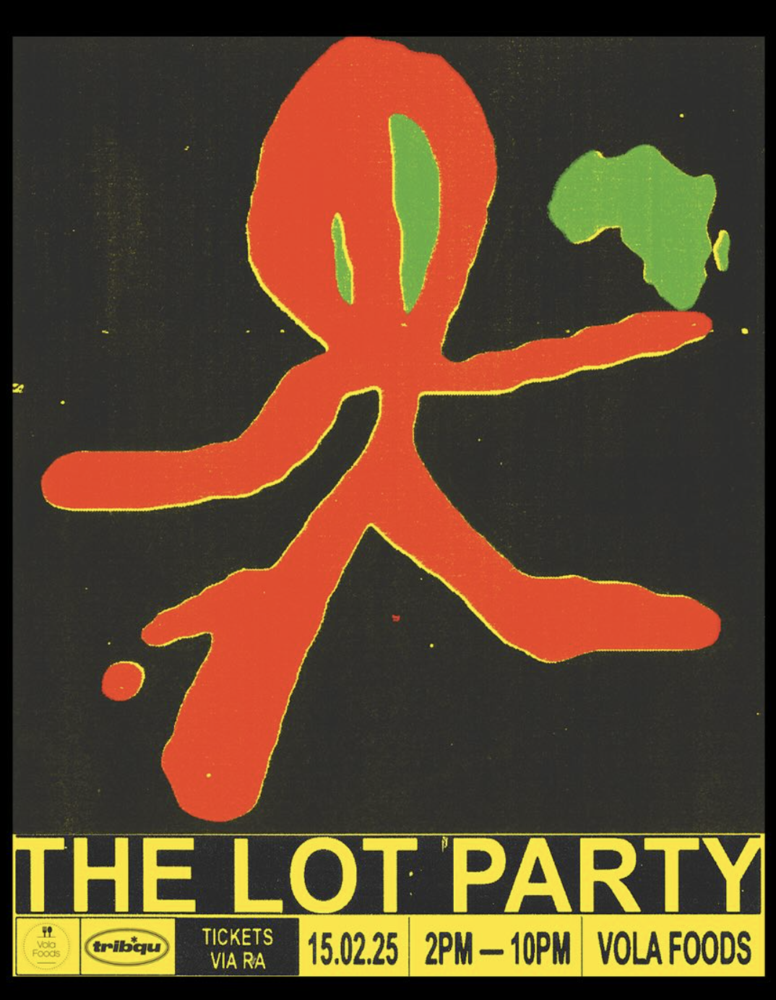
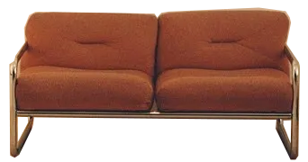

Album by: Harry Style, 2022
Graphic design: Bradley Pinkerton
Photography: Hanna Moon
Bradley Pinkerton is a Melbourne based Graphic Designer specialising in creative branding, title design and merch creation. His studio focuses on producing expressive, thoughtful and distinctive work for the arts and music sectors.

In terms of colour, Bradley opted predominantly for yellows and oranges, for their “warm and secure feeling”, while pops of blue invoke the feeling of “searching and longing”. The typographic route, however, proved tricker. Bradley was intent on using the font Trooper Jazzerin
Interview with Bradley Pinkerton about the cover designPinkerton also designd som really nice merch for this album. The ones futuring the house is my favorite ones. I think it's simple and cute but also gives a fun and kid-like feeling which I like but then it's in red and black which gives it more of an edge, like it.





Now playing: Harry's House